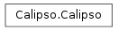

Calipso¶
The main class of the application. Calipso manages all Tkinter and widget related entities, and ensures all parts of the GUI are initialized and created before the start of the program.
if __name__ == "__main__":
rt = Tk()
program = Calipso(rt) # Create main GUI window
program.setupWindow() # create window in center screen
program.setupMenu() # create top menu
program.setupMainScreen() # create top buttons, initialize child and display base_plt
rt.mainloop() # program main loop
os._exit(1)
The order of functions calls in the beginning of the program is as follows:
__init__
setupWindow
setupMenu
setupMainScreen
|-> calls createTopScreenGUI
|-> calls createChildWindowGUI
|-> calls selPlot(BASE_PLOT)

-
class
Calipso(r)[source]¶ Main class of the application, handles all GUI related events as well as creating other GUI windows such as the toolbar or import dialog
-
attribute_window(event)[source]¶ Open attribute window for specifying attributes on objects
Parameters: event – A Tkinter passed event object
-
close()[source]¶ Checks if the all the shapes are saved. If a shape is unsaved, the program will ask the user whether save or not, and then close the program
-
create_top_gui()[source]¶ Initializes and creates the File: label, file dialog, and browse button that appear at the top of the screen
-
export_db()[source]¶ Notify the database that a save is taking place, the db will then save all polygons present on the screen
-
static
export_json_db()[source]¶ Export the contents of the database to an archive containing JSON, which can then be loaded into other databases and have all shapes imported
-
extract_window(event)[source]¶ Opens a subwindow that displays the data bounded by the shape
Parameters: event – A Tkinter passed event object
-
get_fig()[source]¶ Returns the figure that is plotted to the canvas
Return type: matplotlib.figure.Figure
-
get_shapemanager()[source]¶ Returns the internal
polygonListobjectReturn type: polygon.manager.ShapeManager
-
get_toolbar()[source]¶ Returns the internal
toolbarobjectReturn type: tools.navigationtoolbar.NavigationToolbar2CALIPSO
-
static
import_json_db()[source]¶ Import the contents of a JSON file to the database, works hand in hand with the
export_json_dbclass method. This will allows users to share their database without needing to manually move their db file. :return:
-
import_window()[source]¶ Open the database import window allowing the user to import and delete entries.
Parameters: event – ignored Tkinter event object
-
paint_window(event)[source]¶ Opens the paint window for specifying the shape’s color
Parameters: event – A Tkinter passed event object
-
pan(event)[source]¶ Saves initial coordinates of mouse press when the user begins to pan
Parameters: event – Tkinter passed event object
-
render_pan(event)[source]¶ Saves ending coordinates of mouse press and proceeds to find the distance between the two points, scrolls the map accordingly
Parameters: event – Tkinter passed event object
-
save_json()[source]¶ Save all shapes on the map inside a JSON object given a previously saved file. If no file exists prompt for file
-
set_plot(plot_type, xrange_=(0, 1000), yrange=(0, 20))[source]¶ Draws to the canvas according to the plot_type specified in the arguments. Accepts one of the attributes below
-
BASE_PLOT¶
-
BACKSCATTE RED
-
DEPOLARIZED¶
-
VFM¶
Parameters: -
-
setup_main_screen()[source]¶ Setup the top GUI, initialize toolbar window and set the plot to a blank image
Creates a drop down menu bar
Callback function bound to <ButtonPress-1> which displays the current list of shapes on the plot to the option menu. All tags are grabbed which can then be selected by the user to see which object they are looking for.
Parameters: event – Tkinter passed event object, ignored
-